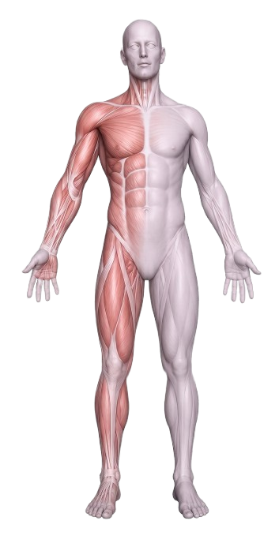

Platform self-screening cerdas menggunakan metode Fuzzy Tsukamoto untuk klasifikasi tingkat risiko kanker paru-paru bagi perokok aktif. Mulai skrining dalam hitungan menit.
Teknologi AI terdepan dengan pengalaman pengguna yang premium untuk membantu Anda memahami dan mengelola risiko kesehatan.
Mesin inferensi fuzzy canggih yang menganalisis multi-parameter untuk menghasilkan klasifikasi risiko yang akurat dan personal.
Proses skrining mandiri yang mudah dan cepat. Cukup jawab beberapa pertanyaan dan dapatkan hasil analisis dalam hitungan detik.
Empat tingkat klasifikasi risiko: Rendah, Sedang, Tinggi, dan Sangat Tinggi. Setiap kategori disertai penjelasan detail.
Rekomendasi kesehatan personal yang disesuaikan dengan profil risiko Anda, meliputi gaya hidup, diet, dan tindakan medis.
Dashboard analitik komprehensif untuk memantau riwayat skrining, tren risiko, dan perkembangan kesehatan Anda.
Knowledge base lengkap tentang kanker paru-paru, faktor risiko, pencegahan, dan tips kesehatan dari sumber terpercaya.
Data kesehatan Anda terlindungi dengan enkripsi end-to-end dan standar keamanan tertinggi. Privasi Anda adalah prioritas kami.
Data menunjukkan urgensi deteksi dini kanker paru-paru. Dengan skrining yang tepat, tingkat keberhasilan pengobatan meningkat signifikan.
Memahami faktor risiko adalah langkah pertama untuk pencegahan. Platform kami menganalisis semua faktor ini untuk menghasilkan profil risiko Anda.
Jumlah batang rokok per hari dan durasi merokok menjadi faktor utama risiko kanker paru-paru.
Risiko meningkat seiring bertambahnya usia, terutama pada individu berusia di atas 50 tahun.
Genetika berperan penting. Riwayat kanker paru dalam keluarga meningkatkan kerentanan individu.
Polusi udara, asap rokok pasif, radon, dan bahan kimia berbahaya di tempat kerja.
Batuk kronis, nyeri dada, sesak napas, dan penurunan berat badan yang tidak normal.
Indeks massa tubuh dan kondisi kesehatan umum mempengaruhi kerentanan terhadap penyakit paru.
Platform kami menggunakan metode Fuzzy Inference System Tsukamoto yang terbukti efektif untuk sistem pendukung keputusan medis.
Hanya butuh 3 menit untuk mengetahui tingkat risiko Anda. Gratis, privat, dan didukung teknologi AI terdepan.